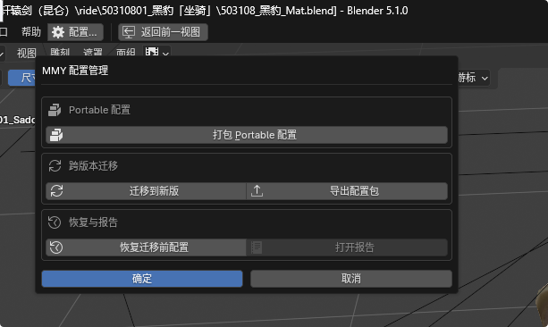

日期：2026-08-18 ｜ 基于版本：MMY Blender Configure v1.2.0（Blender 5.1.0 实机截图 + 源码审查）
状态：分析报告，待确认后进入开发

| 模块 | 入口 | 产物 | 说明 |
|---|---|---|---|
| Portable 打包 | 打包 Portable 配置 | Blender_Portable_v{版本}_{时间}.zip | 整个 portable 文件夹全量压缩，独立子进程执行 |
| 跨版本迁移 | 迁移到新版 | Profile 包 + Recovery 目录 + JSON 报告 | 快照 → 备份目标 → 原子切换 → 目标 Blender 后台审计 → 失败回滚 |
| 导出配置包 | 导出配置包 | MMY_Blender_Profile_v{版本}_{时间}.zip | 含 manifest.json 的迁移快照（SHA-256 清单） |
| 恢复 | 恢复迁移前配置 | — | 需手动选择 recovery.json，先备份当前再恢复 |
| 报告 | 打开报告 | — | 打开报告所在文件夹（非报告本身） |
迁移核心 migration_core.py 工程质量较高，这些设计应保留：
os.replace 事务式安装，失败自动回滚到 target_before.zip结论：底层迁移引擎是可靠的，问题集中在 UI 层 和「备份」这个概念的缺失。
execute() 直接 return {"FINISHED"}——只是关闭弹窗。用户点「确定」的心理预期是"开始执行"，实际什么都没发生。真正的操作是上面 5 个小按钮，但它们的视觉权重远低于蓝色的「确定」。
invoke_props_dialog 里再放 operator 按钮，点击后当前弹窗关闭、弹出新弹窗。用户操作完一步后失去"我在哪一步"的上下文，完成后也没有明确的结果页。
recovery.json 是什么、在哪（输出目录/MMY_Migration_Recovery/{源版本}_to_{目标版本}_{run_id}/recovery.json）。恢复是兜底功能，却是全插件使用门槛最高的操作。
| 产物 | 命名 | 版本辨识度 | 内容可读性 |
|---|---|---|---|
| Portable 打包 | Blender_Portable_v5.1.0_20260818_1227.zip | ✅ 目录名推断 | ❌ zip 内无 manifest |
| 迁移配置包 | MMY_Blender_Profile_v5.1.0_20260818_122730.zip | ✅ 有 manifest | △ manifest 面向程序 |
| 迁移前目标备份 | MMY_Migration_Recovery/5.1.0_to_5.2.0_{run_id}/ | ✅ 目录名含双版本 | ❌ 用户看不到结构 |
migration_report.json，用户要用文本编辑器看 JSON。
| 风险 | 说明 |
|---|---|
迁移前强制 save_userpref() | 当前会话未保存的偏好改动被静默落盘并进入快照，无任何提示 |
恢复时 target_existed=False 分支 | 直接删除目标用户根目录（虽有 current_backup 兜底，metadata 损坏误判时删除是即时的） |
| 残留目录无清理机制 | 迁移中断留下 .mmy_old_* / .mmy_stage_* / .mmy_failed_*，不扫描不清理，还会被下一次 portable 打包打进去 |
| 进程检测依赖 PowerShell | Get-CimInstance 超时 20s；企业策略禁用 PowerShell 时迁移直接报错，无降级路径 |
| 启动脚本风险提示过弱 | include_startup_scripts 风险只写在属性名括号里，勾选无二次确认——该目录 .py 会在目标 Blender 启动时自动执行，是全插件风险最高的开关 |
.blend1/.log/缓存目录，目标备份不跳过——体积偏大，行为差异无文档unknown，备份可辨识度归零方案 B1：统一命名 + 全量 manifest
MMY_Backup_{类型}_{源版本}_{时间戳}.zip 类型: Portable（全量） | Profile（迁移快照） | Recovery（迁移前目标备份） 例: MMY_Backup_Portable_v5.1.0_20260818_1227.zip
每种 zip（含 Portable 全量包）内写入 manifest.json：源 Blender 版本、安装模式、机器名、包含组件、文件数、总大小、创建时间。打开任何 zip 都能回答"什么版本、什么内容、哪来的"。
方案 B2：备份历史视图——扫描备份目录，表格列出所有 MMY_Backup_*.zip + Recovery 目录（版本 / 类型 / 时间 / 大小），每项提供【恢复】【打开位置】。恢复不再要求手找 recovery.json。
方案 M1：迁移前预检报告（先检测，后确认）——点「迁移到新版」后先跑只读预检（探针已存在，成本极低），生成确认页：
| 项目 | 内容 |
|---|---|
| 源 → 目标 | Blender 5.1.0 → 5.2.0（同主版本 ✅ / 跨主版本 ❌ 拒绝并说明原因） |
| 目标现状 | 目标已有配置 XX MB，将被覆盖（已含自动备份） |
| 磁盘 | 需要约 XX MB，可用 XX MB |
| 插件兼容预测 | 按 blender_version_min/max 对比目标版本，列出预计不兼容插件 |
| 组件清单 | 按风险分级展示（见 M2），默认只勾选安全项 |
用户看完点【确认迁移】才真正动手。
方案 M2：组件按风险分级（"只同步无风险类别" = 默认项）
| 级别 | 组件 | 默认 | 理由 |
|---|---|---|---|
| 🟢 安全 | 偏好设置 + 快捷键（userpref.blend + keymap 双保险） | ✅ 必选 | 有目标审计 + 指纹比对兜底 |
| 🟢 安全 | 启动文件 startup.blend | ✅ 必选 | 目标版本自行转换 |
| 🟢 安全 | 插件与扩展（addons / extensions） | ✅ 默认 | 失败自动禁用，可回滚 |
| 🟢 安全 | 用户预设 presets | ✅ 默认 | 纯数据文件 |
| 🟡 谨慎 | datafiles / Studio Lights | ⬜ | 体积大，通常自带 |
| 🟡 谨慎 | 书签与最近文件 | ⬜ | 含本机路径隐私 |
| 🔴 高风险 | startup 启动脚本 | ⬜ + 二次确认 | 目标启动时自动执行代码 |
方案 M3：迁移报告 HTML 化——迁移完成后同时生成 migration_report.html（版本对照、组件结果、被禁用插件、快捷键指纹比对、恢复指引），「打开报告」直达 HTML。
配置管理（主面板，显示当前版本 + 上次操作状态）
├─ 📦 备份
│ ├─ 立即备份（全量 Portable）→ 摘要确认 → 执行
│ └─ 备份记录（列表：版本/类型/时间/大小 → 恢复/打开位置）
├─ 🔄 迁移
│ ├─ 迁移到新版 → 预检报告页（M1） → 确认 → 执行（进度+已用时长）
│ └─ 导出配置包 → 组件分级选择（M2）→ 执行
└─ 🧹 维护
├─ 清理迁移残留（扫描 .mmy_old_/.mmy_stage_ 等）
└─ 打开报告（HTML）
关键交互原则：去掉无意义的「确定」；每个破坏性操作前必有摘要确认页；执行中显示已用时长；完成有结果页。
补充：回答「5.1 备份的配置怎么进 5.2/5.3？反过来 5.2/5.3 的配置怎么回 5.1？」——基于 validate_forward_version 的真实代码边界
| 流向 | 是否支持 | 操作路径 |
|---|---|---|
| 5.1 → 5.2 | ✅ 支持 | 迁移到新版（当前 Blender / 已有配置包均可） |
| 5.1 → 5.3（跳版本） | ✅ 支持 | 同上。同主版本即可，不需要经过 5.2 中转 |
| 一份 5.1 配置包 → 5.2 和 5.3 各迁一份 | ✅ 支持 | 配置包是不可变快照，可重复使用；每个目标各自独立备份、独立回滚，互不干扰 |
| 5.2 → 5.3 | ✅ 支持 | 从 5.2 当前环境重新导出配置包再迁移 |
| 5.2 / 5.3 → 5.1（降级） | ❌ 拒绝 | 设计上拒绝，见 5.3 降级策略 |
| 4.5 → 5.1（跨主版本） | ❌ 拒绝 | validate_forward_version 直接拒绝 |
场景 A：5.2、5.3 都是全新安装，想要 5.1 的配置
MMY_Blender_Profile_v5.1.0_{时间}.zipblender.exe → 执行blender.exe → 执行配置包可复用，两份迁移各自生成独立的 Recovery 目录，互不影响。
场景 B：链式升级 —— 已在 5.2 里工作了一段时间，5.3 发布
决策规则：永远从"你最近实际使用的那个版本"导出，而不是从最早的版本复用旧包。旧配置包只适用于"目标全新、中间没产生过新设置"的场景。
为什么设计上拒绝降级迁移：
userpref.blend 由高版本写入后可能含低版本不识别的字段与结构，旧版读取时静默丢弃甚至损坏降级的真实需求其实是"找回旧版本当时的配置"。这不需要"翻译"，需要的是"恢复"——而这正是需求 1（版本可辨识备份）存在的意义：
| 替代路径 | 说明 |
|---|---|
| ① 全量备份回灌（主路径） | 用当时的 MMY_Backup_Portable_v5.1.0_*.zip 直接解压回 5.1 的 portable 目录。备份是什么版本，恢复的就是什么版本 |
| ② 原地不动 | 正向迁移从不修改源版本——5.1 的用户目录在你迁去 5.2 后原封不动，直接打开 5.1 即可 |
| ③ 迁移自动兜底 | 5.1→5.2 迁移时对目标做的 target_before.zip，可随时通过恢复入口还原 |
| ④ 快捷键单点兜底 | 配置包内 fallback/keymap.py 可在旧版 Blender 里手动导入 |
结论：不做"高版本配置翻译回低版本"功能；降级 = 恢复该版本自己的备份。UI 文案应把这条心智写明，避免用户去找一个不存在的"迁回旧版"按钮。
| 编号 | 补强项 |
|---|---|
| M4 | 配置包信息前置展示：PROFILE 模式选中配置包后先读 manifest，展示"来源版本 / 创建时间 / 包含组件"；若检测到本机存在比配置包更新的同主版本安装，提示"若你已在更高版本工作过，建议从该版本重新导出"——防止场景 B 误用 |
| M5 | 多目标批量迁移（可选增强）：预检页列出本机探测到的全部可迁入目标（同主版本且更高版本的 blender.exe），勾选多个目标一次执行，替代"同一配置包手动跑两遍" |
| B3 | 备份即降级答案：备份历史视图与恢复入口文案统一为"回到旧版本 = 恢复该版本的备份"，主面板不再出现任何暗示"可以迁回旧版"的措辞 |
| 优先级 | 事项 | 对应问题 |
|---|---|---|
| P0 | 移除/重设计「确定」按钮；主面板显示当前版本与上次状态 | 问题 1、6 |
| P0 | 迁移预检确认页（M1）+ 组件风险分级（M2） | 需求 2 |
| P0 | 恢复入口改为备份列表选择，不再手找 recovery.json | 问题 4 |
| P0 | 配置包信息前置展示 + 新旧提示（M4）；恢复文案写明「降级=恢复备份」（B3） | 章节 5.3、5.4 |
| P1 | 统一命名 + 全量 manifest（B1）+ 备份历史视图（B2） | 需求 1 |
| P1 | 迁移报告 HTML 化（M3）；打开报告直达文件 | 问题 7 |
| P2 | 多目标批量迁移（M5） | 章节 5.2 场景 A |
| P2 | 启动时清理迁移残留；执行中显示已用时长 | 风险 3、7 |
| P2 | save_userpref 前提示；startup 脚本二次确认 | 风险 1、5 |